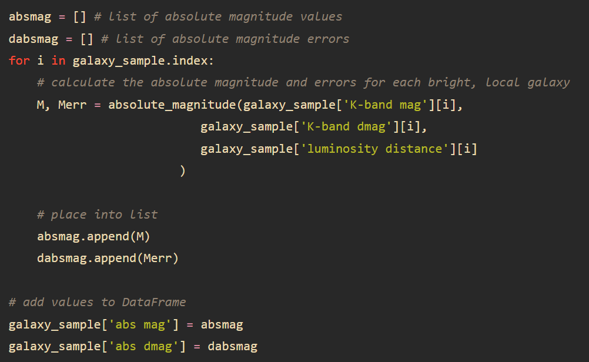
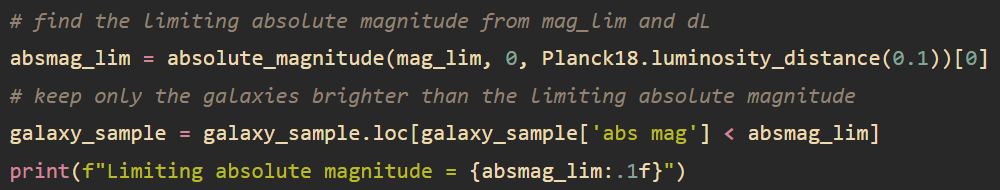

About Projects Employment CV
Galaxy luminosity function coding project
The galaxy luminosity function is an extremely important plot for cosmologists who study the properties of galaxy populations as a function of redshift. The formation and evolution of a single galaxy cannot be observed directly, as galactic timescales are far too long. Instead, galaxies with different "lookback times" or redshift are observed to build up a picture of galaxy formation and evolution. The aim of this project was to deterimine the cosmological parameters of a model universe by determining the galaxy luminosity function and fitting a Schechter function to it.
Remove faint galaxies
Firstly, the faint galaxies (<3σ) in the sample were removed. This was done by removing galaxies with magnitudes greater than:
m lim = 22 - 2.5 log10(3)
where 22 is the magnitude limit of the survey.
The data were stored in a pandas dataframe, with three columns: redshift, apparent magnitude, error in apparent magnitude.
The code for the removal of the faint galaxies can be seen below:
Galaxy number counts
Next, the number count of the bright galaxies were calculated. Note that this is not necessary for calculating a luminosity function. The number counts are shown as a function of redshift and apparent magnitude.
Include only galaxies with z < 0.1
Now, only galaxies between redshifts 0 and 0.1 (0 < z < 0.1) were selected for the luminosity function. Higher redshift galaxies were removed with the following code:
Survey volume
The volume of the survey was then calculated using the co-moving distance at z = 0.1. This was calculated to be 82,184 Mpc3 using the code below:
Luminosity distance
Next, the lumonsity distance was calculated for each galaxy.
Absolute magnitude
Using the luminosity distance, the absolute magnitude of each galaxy in the survey could be calculated. This was done with the function below:
The function was then used to calculate the absolute magnitude for each galaxy.
Limiting absolute magnitude
Using the limiting apparent magnitude (20.8) and the luminosity distance at z = 0.1, the limiting absolute magnitude was calculated with the code below.
Galaxy luminosity function
The galaxy luminosity function shows the number of galaxies per cubic megaparsec per magnitude. The galaxies were binned by magnitude and the number of these galaxies per cubic co-moving distance was calculated.
Schechter function
A Schechter function was then fit to the galaxy luminosity function to determine the cosmological parameters of the model universe.
The Schechter function is given by the following equation:
n(M)dM = 0.4 ln(10) φ* [100.4(M*-M)]α+1 e-100.4(M*-M)dM
The function was fit with the following lines of code: